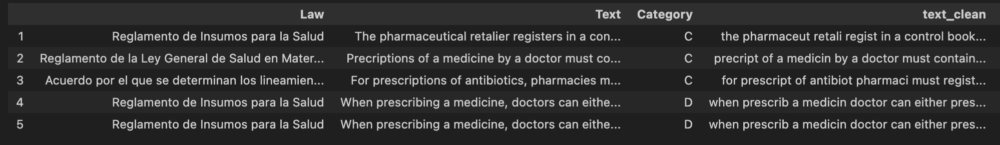

I constructed a labeled dataset of legal texts that contain different categories of potentially anticompetitive provisions.
One of the most useful applications of Natural Language Processing in the legal profession is text and document classification.
The practice of law deals with large volumes of legal documents that need to be sorted and organized. Such administrative tasks can take a significant amount of time and manpower and can shift a lawyer’s focus away from tasks that need more human expertise and judgment.
In my master’s thesis Legal Text Classification for Competition Impact Assessment Studies (CIA), I trained machine and deep learning models to aid the initial document screening and review process that is part of every CIA. The goal of the models is to (1) identify laws that contain provisions that can potentially harm and restrict market competition, and (2)distinguish between multiple categories of these restrictions. These are essentially binary and multiclass classification problems.
Pre-labeled data is an essential element of classification tasks. Machine learning algorithms learn from examples that map an outcome variable to the text or input data. For this exercise I collected a set of legal texts (bills, acts, resolutions, decrees, executive orders) and matched them to categories of anticompetitive provisions. I also augmented the data to ensure a balanced training set. The final dataset consists of 4,153 labeled paragraphs, each averaging 45 words in length.
Pre-processing of legal texts and labels
The Organisation for Economic Co-operation and Development (OECD) has a competition division that conducts CIAs in different industries and economies. The list of legal documents I used for this study were gathered from official government databases of 7 countries1 where a round of CIA studies were recently conducted. The corpus includes 273 unique sector legislation. I collapsed this into unique paragraphs and applied the usual text pre-processing steps – removal of numeric characters and symbols, lowercasing, and lemmatization.
The outcome labels are based on the OECD’s CIA checklist. There are four categories of potentially anticompetitive provisions.
Category
Sub-categories
A
Limits the number or range of suppliers
Exclusivity rights, licenses and permits, cost of entry, geographical barriers
B
Limits the ability of suppliers to compete
Price regulation, advertising restrictions, unduly strict quality standards, cost of production
C
Reduces the incentive of suppliers to compete
Self- or co-regulatory regimes, publishing of sensitive business information, exemption from antitrust laws
D
Limits the choices and information available to customers
Buyer-seller information assymetry, consumer switching costs
Paragraphs from the legal text corpus are assigned to one of the four categories. I also include a None category for paragraphs that do not fall into any of the above restrictions. The initial assignments are based on manual annotations by the OECD, published in existing CIA reports. Most of these are hard coded in PDF files and had to be parsed and re-encoded. I also added a small sample of texts (less than 100) which I manually encoded. The resulting preliminary dataset has 2,104 paragraphs, with assigned labels skewed to category A2. To address the data imbalance, I use data augmentation technique called back translation.
Data augmentation and back translation of texts
Back translation involves translating text into a “host” language before translating back to the original language (in this case English). As a result, new sentences are created with variations on choice of words and stylistic properties, but without significant alternations to its meaning. I use 16 host languages for the back translation of legal texts3.
The code below shows the functions used to implement the back translation. The full source code and all notebooks used for this project can be found in this repository.
Show code
# download language translatorsdef get_translator(lang, from_eng=True): prefix ="en-"if from_eng else"" suffix ="-en"ifnot from_eng else"" translator =f'Helsinki-NLP/opus-mt-{prefix}{lang}{suffix}' translator_tokenizer = MarianTokenizer.from_pretrained(translator) translator_model = MarianMTModel.from_pretrained(translator)print(f'{prefix}{lang}{suffix} translator downloaded.')return translator_model, translator_tokenizer# translate textdef run_translation(batch_text, model, tokenizer, lang): formated_batch_texts = [">>{}<< {}".format(lang, text) for text in batch_text] translated = model.generate(**tokenizer(formated_batch_texts, return_tensors="pt", padding=True)) translated_texts = [tokenizer.decode(t, skip_special_tokens=True) for t in translated]return translated_texts# back translationdef back_translation(model, tokenizer, model_back, tokenizer_back, batch_texts, org_lang="en", temp_lang="fr"): temp_trans_batch = run_translation(batch_texts, model, tokenizer, temp_lang) back_trans_batch = run_translation(temp_trans_batch, model_back, tokenizer_back, org_lang)return back_trans_batch
Below are sample back translations of the text:
The public notice can include requirements on the brand or model.
Language
Translation
Back translation
French
L’avis public peut inclure des exigences relatives à la marque ou au modèle.
The public notice may include trademark or model requirements.
Dutch
De bekendmaking kan eisen van merk of model bevatten.
The publication may contain requirements of a trade mark or a model.
Italian
L’avviso pubblico puó includere requisiti di marca o modello.
The public notice may include make or model requirements.
Show code
sample_text ='The public notice can include requirements on the brand or model'sample_set = []lang_sample = ['fr', 'nl', 'it']for lang in lang_sample: model = models[lang] tokenizer = tokenizers[lang] model_back = models_back[lang] tokenizer_back = tokenizers_back[lang] temp_trans_batch = run_translation([sample_text], model, tokenizer, lang) back_trans_batch = run_translation(temp_trans_batch, model_back, tokenizer_back, "en") sample_set.append([lang, temp_trans_batch[0], back_trans_batch[0]])
After back translation, the final dataset has 4,153 labeled paragraphs and a 21-31-23-25 split among categories. Below is a sample of the data.

Footnotes
The countries included are Brazil, Brunei, Indonesia, Malaysia, Mexico, Philippines, Singapore↩︎
The initial distribution of labels is category A: 48%, B: 11%, C: 2%, D and Others: 3%, None: 36%↩︎
Back translation is only applied to the training set (excludes the test set to avoid data leakage)↩︎